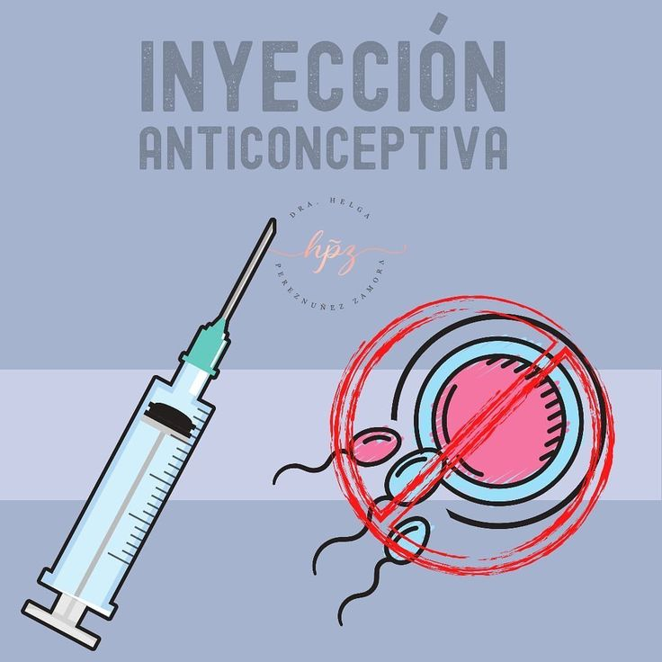

Métodos anticonceptivos
Los métodos anticonceptivos se definen como las estrategias para impedir o reducir de forma significativa las probabilidades de que se produzca la fecundación y, con ello, el embarazo, al mantener relaciones sexuales con penetración vaginal.
Su uso se generalizó a mitad del siglo XX como forma de planificación familiar y control de la natalidad, ya que rompen la asociación entre la relación sexual y la concepción.
| Tipos de anticonceptivos |
Definición |
Imagen |
| Condón femenino |
Es una funda transparente, blanda y resistente de
látex, nitrilo o poliuretano, con dos anillos de
plástico (uno en cada extremo) y contiene
lubricante.
| 
|
| Condón masculino |
Es una funda de látex que se coloca sobre el pene
erecto antes de la relación sexual.
Este método te protege de un embarazo y
además de infecciones de transmisión sexual,
incluyendo el VIH/ SIDA.
|
|
| Pastillas anticonceptivas |
Las pastillas anticonceptivas son tabletas que
ayudan a evitar temporalmente un embarazo.
|
|
| Inyecciones anticonceptivas |
Las inyecciones están compuestas por hormonas similares a las que produce el cuerpo de la
mujer. Inhiben la ovulación impidiendo que ocurra un
embarazo.
| 
|